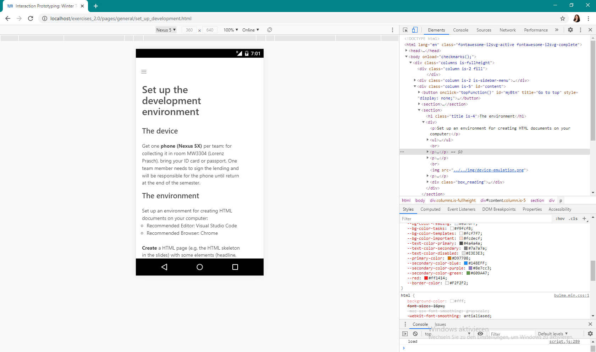
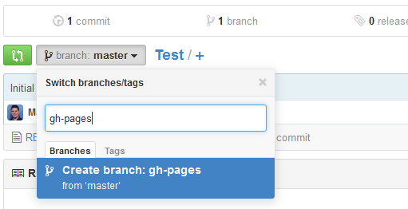

Set up the development environment
The device
Get one phone (Nexus 5X) per team: for collecting it in room MW3304 (Lorenz Prasch), bring your ID card or passport. One team member needs to sign the lending and will be responsible for the phone until return at the end of the semester.
The environment
Set up an environment for creating HTML documents on your computer.
- Recommended Editor: Brackets
- Recommended Browser: Chrome
Create a HTML page (e.g. the HTML skeleton in the slides) with some elements (headline, paragraphs …) and open it in your browser.
Access the Chrome developer tools and inspect the elements in your document. Activate the device emulation (Nexus 5s):

Hint: If you have not already set up eduroam, do so for this project.
Starting the app
You can now make your HTML accessible via github.io, a web server publishing all documents you have in the GitHub branch gh-pages.
- Go to your project repository: https://github.com/interactionprototyping/GROUP (where GROUP is your group's chosen name)
- Create a
gh-pagesbranch, which is used to publish your site:  - Make
gh-pagesyour default branch (go to , right side): - The files, you commit to this branch, are published under http://interactionprototyping.github.io/GROUP/FILE.html (where GROUP is your group name and FILE the filename of the document you committed). Convention: If you name your application’s starting page
index.html, you don’t need to enter a filename in your browser: typing http://interactionprototyping.github.io/GROUP will then be enough. - You can access these files in your phone’s browser. Wait five minutes for the first usage after setting up
gh-pages.